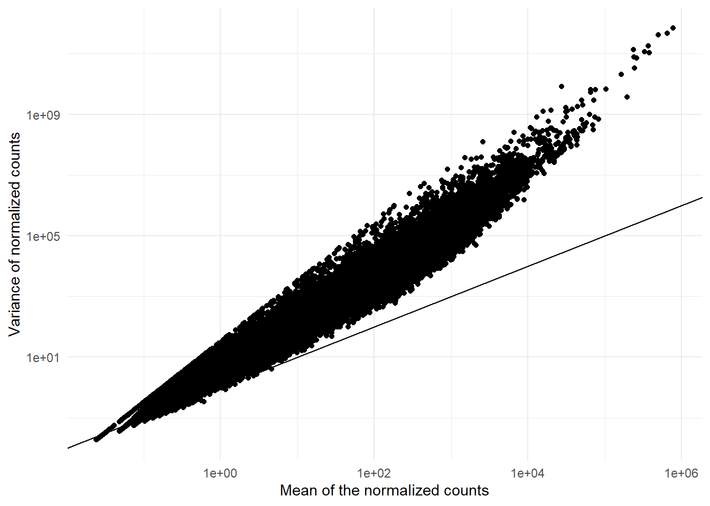
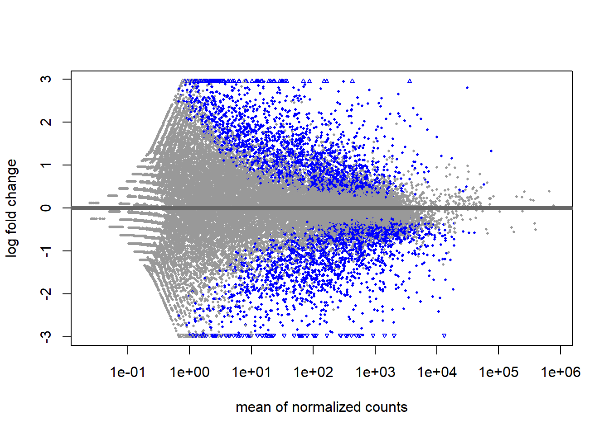
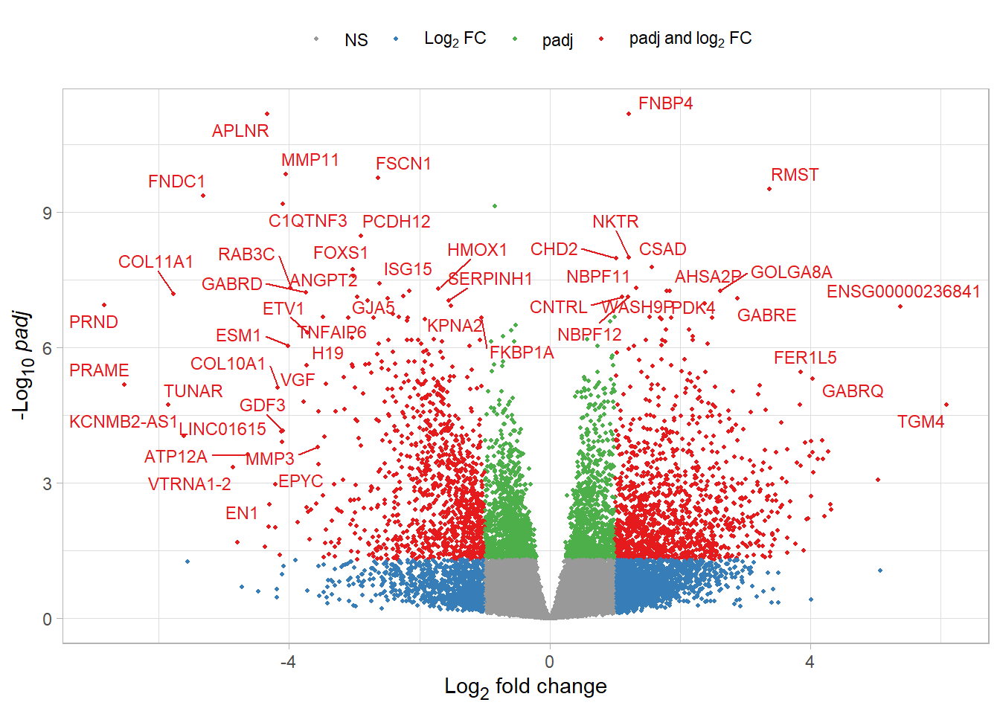

Welcome to Bioconductor
Vignettes contain introductory material; view with
'browseVignettes()'. To cite Bioconductor, see
'citation("Biobase")', and for packages 'citation("pkgname")'.
Attaching package: 'Biobase'
The following object is masked from 'package:MatrixGenerics':
rowMedians
The following objects are masked from 'package:matrixStats':
anyMissing, rowMedians
Warning in DESeqDataSet(se, design = design, ignoreRank): some variables in
design formula are characters, converting to factors
Note: levels of factors in the design contain characters other than
letters, numbers, '_' and '.'. It is recommended (but not required) to use
only letters, numbers, and delimiters '_' or '.', as these are safe characters
for column names in R. [This is a message, not a warning or an error]
dds <-estimateSizeFactors(dds)
Note: levels of factors in the design contain characters other than
letters, numbers, '_' and '.'. It is recommended (but not required) to use
only letters, numbers, and delimiters '_' or '.', as these are safe characters
for column names in R. [This is a message, not a warning or an error]
Plotting the mean counts against the count variance
gp <-ggplot(data.frame(x=mean_counts, y=count_var), aes(x=x, y=y)) +geom_point() +geom_abline(slope=1, intercept=0) +scale_x_log10() +scale_y_log10() +labs(x='Mean of the normalized counts', y ='Variance of normalized counts') +theme_minimal()print(gp)

Running the DESeq model
dds <-DESeq(dds)
using pre-existing size factors
estimating dispersions
gene-wise dispersion estimates
mean-dispersion relationship
Note: levels of factors in the design contain characters other than
letters, numbers, '_' and '.'. It is recommended (but not required) to use
only letters, numbers, and delimiters '_' or '.', as these are safe characters
for column names in R. [This is a message, not a warning or an error]
final dispersion estimates
fitting model and testing
Note: levels of factors in the design contain characters other than
letters, numbers, '_' and '.'. It is recommended (but not required) to use
only letters, numbers, and delimiters '_' or '.', as these are safe characters
for column names in R. [This is a message, not a warning or an error]
-- replacing outliers and refitting for 1152 genes
-- DESeq argument 'minReplicatesForReplace' = 7
-- original counts are preserved in counts(dds)
estimating dispersions
fitting model and testing
Note: levels of factors in the design contain characters other than
letters, numbers, '_' and '.'. It is recommended (but not required) to use
only letters, numbers, and delimiters '_' or '.', as these are safe characters
for column names in R. [This is a message, not a warning or an error]
res <-results(dds)summary(res, alpha=0.05)
out of 37345 with nonzero total read count
adjusted p-value < 0.05
LFC > 0 (up) : 2160, 5.8%
LFC < 0 (down) : 2226, 6%
outliers [1] : 0, 0%
low counts [2] : 12351, 33%
(mean count < 1)
[1] see 'cooksCutoff' argument of ?results
[2] see 'independentFiltering' argument of ?results
Ordering the results by their pvalue
res_ordered <- res[order(res$pvalue), ]res_ordered <- res_ordered[complete.cases(res_ordered$padj),]res_annotated <-as.data.frame(res_ordered)rownames(merged_annotations) <- merged_annotations$original_rowname# Add gene symbols from your annotation# Using the gene_info data frame created earlierres_annotated$gene_symbol <- merged_annotations[rownames(res_annotated), "external_gene_name"]# For genes without symbols, use the Ensembl IDres_annotated$gene_name <-ifelse(is.na(res_annotated$gene_symbol) | res_annotated$gene_symbol =="", rownames(res_annotated), res_annotated$gene_symbol)
Plotting the log2 fold-change against average expression
plotMA(res, colSig='Blue', alpha=0.05)

Volcano Plot
Preparing the results for plotting the volcano plot using ggplot
Setting the log2 fold cutoff value and the p value cutoff
log2FoldCutoff <-1pvCutoff <-0.05
Assigning the groups in the results that meet certain criteria such as having their log2FoldChange value > 1 cutoff value or having their adjusted p-value to be greater than 0.05 to assign them colors for plotting the volcano plot
dplot$Group <-'G0'dplot$Group[abs(dplot$x) > log2FoldCutoff] <-'G1'dplot$Group[dplot$y >-log10(pvCutoff)] <-'G2'dplot$Group[abs(dplot$x) > log2FoldCutoff & dplot$y >-log10(pvCutoff)] <-'G3'dplot$Group<-factor(dplot$Group)dText <- dplot[dplot$Group=="G3",] # Retrieving the gene names for Group G3
Warning: ggrepel: 2214 unlabeled data points (too many overlaps). Consider
increasing max.overlaps

HeatMap
# Select the top 20 most differentially expressed genes (by adjusted p-value)top_genes <-head(order(res_ordered$padj), 20)top_genes_vsd <-assay(vsd)[top_genes, ]# Get the Ensembl IDs for the top genestop_gene_ids <-rownames(top_genes_vsd)# Method 1: Create gene names for row labels# Get gene symbols for the top genesif("original_rowname"%in%colnames(merged_annotations)) {# Set proper row names for matching annotations_for_matching <- merged_annotationsrownames(annotations_for_matching) <- annotations_for_matching$original_rowname# Get gene symbols for top genes top_gene_symbols <- annotations_for_matching[top_gene_ids, "external_gene_name"]} else {# Alternative matching method match_indices <-match(top_gene_ids, merged_annotations$ensembl_clean) top_gene_symbols <- merged_annotations$external_gene_name[match_indices]}# Create readable gene names (use symbol if available, otherwise Ensembl ID)top_gene_names <-ifelse(is.na(top_gene_symbols) | top_gene_symbols =="", top_gene_ids, # Use Ensembl ID if no symbol top_gene_symbols # Use gene symbol)# Make sure names are unique (in case of duplicate gene symbols)top_gene_names <-make.unique(top_gene_names)# Apply gene names as row namesrownames(top_genes_vsd) <- top_gene_names# Create a heatmap of the top 20 genesheatmap_colors <-colorRampPalette(rev(brewer.pal(9, "RdBu")))(255)pheatmap(top_genes_vsd, cluster_rows =TRUE, cluster_cols =TRUE, show_rownames =TRUE, show_colnames =TRUE, color = heatmap_colors,main ="Heatmap of Top 20 Differentially Expressed Genes")